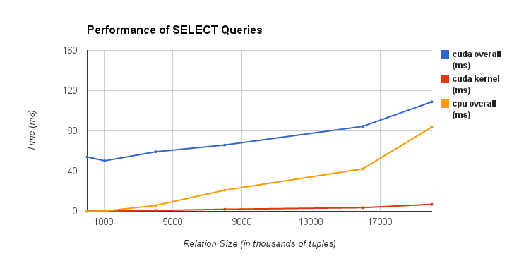

| Week | What We Plan To Do | What We Actually Did |
| Apr 9-12 | Download MemSQL and load 2-3 GB of testing data into MemSQL | Downloaded MemSQL, did further research on the problem, and defined the scope and deliverables of the project. |
| Apr 13-18 | Setup the CUDA program and finalize the relational algebra algorithms that we will be using for each operation. | Setup the CUDA program and finalize the relational algebra algorithms that we will be using for each operation. Also, we altered our project goals and deliverables after further research and discussion with TAs. |
| Apr 19-26 | Get the first iteration of the program working for the PROJECT operation and begin work on SELECT and JOIN operations. Present this working version for the checkpoint. | Implemented SELECT on the GPU using CUDA and conducted performance analysis against the sequential version of SELECT on the CPU. Also, we found a scan operation that would work with large amounts of data on the GPU. We discussed the next steps to take in order to find valid and useful information for this project. |
| Apr 27-May 2 | Finalize the algorithm for PROJECT and performance analysis. Finish working on SELECT. | TBA |
| May 3-9 | Finish working on JOIN and have performance analysis for all operations completed. | TBA |
| May 10-13 | Finish any remaining program tweaks and performance analysis. Compile the final report and presentation. | TBA |
We met with our TA mentor, Alex, to discuss the details of our project and our possible deliverables. He suggested that we add more complexity to the project as it does not seem challenging enough. We decided to focus on creating a working implementation of SELECT on the GPU before proceeding in order to figure out how doable each operation actually was. We were able to implement SELECT for simple queries on the GPU and found that the the performance was much faster than the sequential version on the CPU. However, with the overhead of transferring memory back and forth between the CPU and the GPU, the parallelized GPU version ran at around the same speed as the serialized CPU version with the same level of bandwidth. Now, we are considering:
Our goals from the proposal are mostly the same, but we have altered a few of our expected achievements to more accurately reflect the new scope of the project and what we think is reasonable.
PLAN TO ACHIEVE
Displayed below are our results from running SELECT queries of varying number of tuples on the CPU and the GPU. We measured the time of running the sequential version of the program on CPU against the parallelized version of the program on GPU. Additionally, we found the times of running the program on the GPU with and without the overhead by measuring just the kernel computation.

| Relation Size (in thousands) | Overall GPU Time (in ms) | GPU Kernel Time (in ms) | Overall CPU Time (in ms) |
| 1.024 | 54.054 | 0.197 | 0.005 |
| 32.768 | 50.188 | 0.157 | 0.198 |
| 1048.576 | 59.177 | 0.816 | 5.887 |
| 4000 | 65.899 | 2.019 | 21.027 |
| 8000 | 84.463 | 3.658 | 42.173 |
| 16000 | 108.897 | 6.94 | 83.769 |
| 20000 | 126.956 | 8.572 | 105.036 |
| Relation Size (in thousands) | Overall GPU Throughput (in GB/s) | GPU Kernel Throughput (in GB/s) | Overall CPU Throughput (in GB/s) |
| 1.024 | 0.000 | 0.039 | 1.47 |
| 32.768 | 0.005 | 1.555 | 1.235 |
| 1048.576 | 0.132 | 9.571 | 1.327 |
| 4000 | 0.452 | 14.761 | 1.417 |
| 8000 | 0.706 | 16.292 | 1.413 |
| 16000 | 1.095 | 17.178 | 1.423 |
| 20000 | 1.174 | 17.383 | 1.419 |
We are still unsure about the scope of this project and how to make it challenging and interesting enough for final deliverables. After speaking with TAs, we chose to modify our initial plan and implement SELECT, PROJECT, and JOIN within reasonable time. However, after our preliminary results, we are not positive that choosing to parallelize CPU and GPU alone will give us the best results. Since we are both relatively new to this topic, we are continuing to do research as we develop our project which is making it more difficult to stay with the proposed schedule.
We also have issues with where and how to store our database, and the level of complexity of queries we should test with. Firstly, we are currently storing an extremely simple database on the CPU and transferring memory to the GPU for every execution of the program. This is generating a lot of overhead and is hurting the performance. However, since the memory on GPU is very limited we cannot store the entire database there. We are tyring to figure out the best possible method to store the database to get the most realistic and best times. Secondly, the queries that we are currently testing with for SELECT are very simple. We are searching the entire database for tuples conditioned on only one value. Since SQL queries have multiple levels of complexity, we are debating as to what level of complexity we should test with our implementation. One thing holding us back from exploring more complex queries is the difficulty involved in including these queries in our programs. We believe that it is beyond the scope of our project to include more complex queries so are choosing to stay with simple queries. However, this could skew our final results.